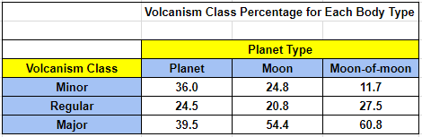
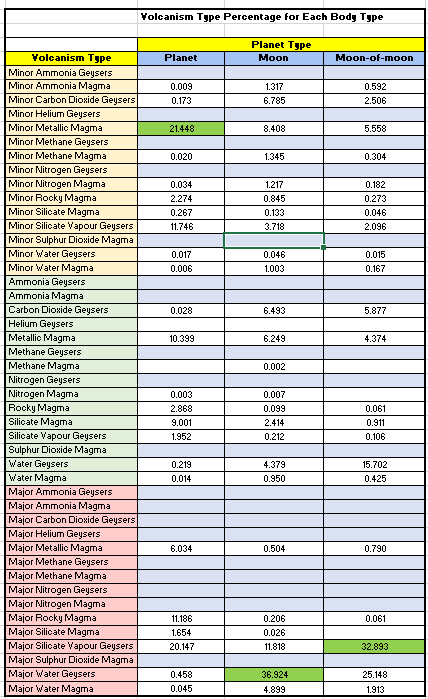
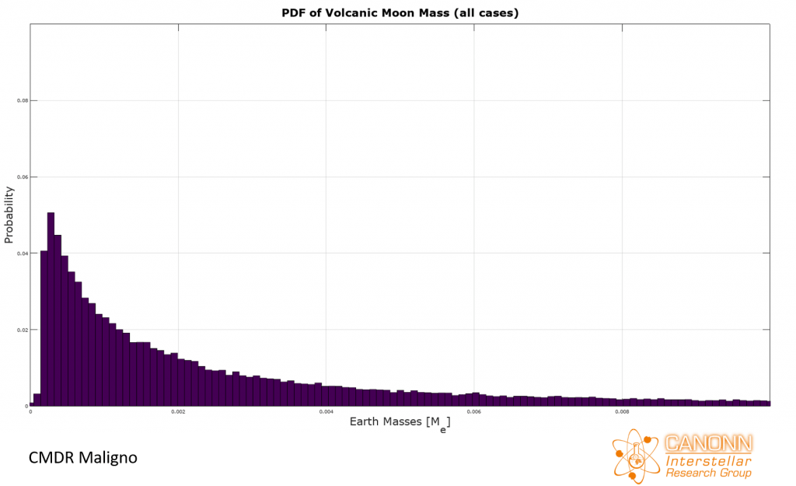
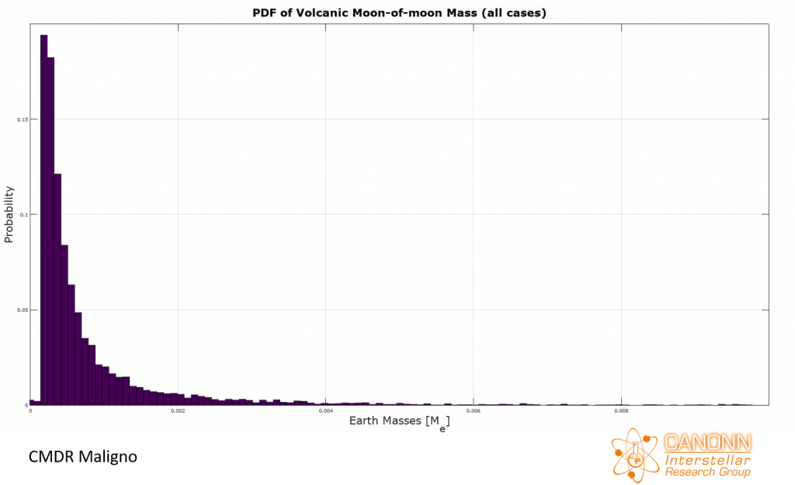

In this study we look at the statistical properties of landable volcanic bodies [1]. This was achieved by mining information available in the Elite Dangerous Star Map (EDSM) database [2]. The purpose of this study is to get an idea of the global statistical properties of bodies with volcanism and help guide future detailed surveys of such bodies. It should be stressed that the scope of this analysis is limited landable bodies.
Each volcanic body can have one of three volcanism ratings: Minor, Regular, or Major. For starters, the table below shows how often each rating is observed for each body type. The first thing to note here is that Major volcanism is the most common rating regardless of body type. Additionally, Major volcanism becomes increasingly more common as the size of the body in question decreases, with moons-of-moons having the highest probability of Major volcanism. The opposite trend is observed in the case of Minor volcanism. No doubt there are multiple reasons behind these trends, but perhaps we can say that part of the reason is that smaller bodies are more reliant on tidal heating, which might lead to a more violent manifestation of volcanism.

The EDSM database has placeholders for 15 different types of volcanism. The table below shows the probability of each volcanism type in planets, moons, and moons-of-moons for all three ratings. The highest volcanism type for each body is highlighted in dark green. There are a number of volcanism types that were not at all observed in the extracted dataset, namely Ammonia Geysers, Sulphur Dioxide Magma, and Helium Geysers. It could be that some of these volcanism types only occur on bodies with atmospheres, which were excluded in this analysis. Or perhaps they are simply exceedingly rare in landable bodies. For instance, the dataset only has a small handful of samples of (regular) Methane Magma that were observed exclusively on Moons, which is the body type with the highest number of samples (60727 out of 102499, so 59%). This leaves the hope that with higher statistics some of the volcanism types we haven’t seen will become available.

It has been noted by members of the Milky Way Society of Organics and Geology (MWSOG) [3] that a body’s volcanism rating is strongly correlated with orbital period [4]. That appears to be the case, as shown in the animated figure below. The first panel, shown in green, corresponds to the PDF of orbital period for planets with Minor volcanism. The panels in blue and red correspond to Regular and Major volcanic activity, respectively. The orbital period is plotted from 0 to 5 days. The distributions below all have very long tails extending to hundreds of days, but the main structure of the PDF is present below orbital periods of less than 5 days. It is evident that the great majority of planets with Minor volcanism tend to have an orbital period greater than 1 day (i.e. 24hrs). The PDF for regular volcanism has three peaks, and the distribution as a whole is shifted toward shorter orbital periods. Finally, a significant portion of planets with Major volcanism have a period of less than 1 day.
The animated figure below shows the results for moons. A trend similar to that of planets is seen here: the higher the volcanism rating, the shorter the orbital period.

The animated figure below shows the corresponding results for moons-of-moons. The trend is even more stark in this case, with the overwhelming majority of bodies with Minor volcanism having orbital periods greater than 1 day. The majority of bodies with a Major rating have orbital periods less than 1 day.

The exact nature of the observed peaks is not yet known and will be the subject of a future study.
A complementary attribute to orbital period is the length of a body’s semi-major axis, or distance to parent body. The next set of animated figures follow the same format as the ones for orbital period, beginning with the PDFs for planets. The horizontal axis is plotted from 0 to 25 Ls. Again, in the case of planets, the PDFs have tails that extend all the way out to 10,000 Ls, but most of the interesting behavior happens below 25 Ls. All of the figures have a spike very close to 0 Ls, which is due to the twin worlds that orbit one another closely. In the case of planets with Minor volcanism, the distribution is concentrated around 7 Ls and follows a rough bell shape. Regular and Major volcanism ratings for planets have a PDF that is almost bi-modal.

The semi-major axis statistics for moons shows an additional spike near 0.5 Ls and a gap down to 0 Ls. This is likely due to the minimum spacing between a gas giant with rings, which act as an “exclusion zone” of sorts, and its orbiting moons. The higher the volcanic rating, the PDFs have a strong bias toward short semi-major axis.

Much like the results for orbital period, the results are quite stark for moons-of-moons. Minor volcanism is mainly observed when the semi-major axis is greater than 0.02 Ls.

It is clear from the examples above, namely those of moons, that the closer a body is located with respect to its parent, the greater the likelihood of Major volcanism occurring (and volcanism in general, for that matter).
Another interesting parameter in relation to volcanism is a body’s orbital position relative to its parent, i.e. it’s offset from the parent body. For instance, a body with designation System XYZ 1 C will have an offset value of 3 because it’s the third moon of planet 1. A similar value can be determined for the the other two body types. [note: EDSM has an offset value for all bodies, but in this analysis we computed that number ourselves].
The animated figure below shows the PDF of relative body position. The figure compares planets, moons, and moons-of-moons. For a given body type, the combined PDF of Minor, Regular, and Major volcanism is shown. This is because the there was no observed dependence on volcanism rating: for a given body type, the shape of the PDF was the same regardless of rating.
It’s clear that for all body types, volcanism likes to happen as close to the parent body as possible. Like most trends noted in this report, the pattern is more pronounced for smaller bodies. In the case of moons-of-moons, it is highly biased toward the first position because generally a moon only has one satellite.

We now turn to the statistical analysis of body subtypes. All landable bodies come in five varieties: High-metal Content World, Icy Body, Metal-Rich Body, Rocky Ice World, and Rocky Body. The animated figure below shows the PDF of body subtypes. There is some variability depending on volcanism rating, but for the sake of brevity the results are combined for each main body type.
The first thing to note here is that planets with volcanism tend to be HMCs or Metal-Rich Bodies, which should be no surprise since bodies with lots of metal tend to have active cores powered by radioactivity. There is also some bias here due to intricacies of planetary formation that tends to favor HMCs and Metal-Rich Bodies.
The results for moons and moons-of-moons are concentrated on Icy Bodies and Rocky Bodies. The majority of satellites in the galaxy tend to be cold bodies attached to gas giants that orbit far away from the parent star.
Very few landable planets, moons, and moons-of-moons, tend to be classified as Rocky Ice Worlds because those usually have atmospheres and are therefore not landable. Explorers that encounter Rocky Ice Worlds with volcanic activity can consider themselves lucky.

Moons and their satellites usually have very low mass. The PDFs of mass for moons and moons-of-moons do not have a dependence on volcanism type. The (non-animated) figures below show the PDFs of mass for moons and moons-of-moons. Both distributions are heavily skewed toward very low mass.


The PDF of mass for planets, on the other hand, shows more complicated behavior. Planets with Minor volcanism usually have a mass between 1 and 2 Earth-masses. Planets with Regular volcanism have a more bi-modal structure: they’re either less than 1 Earth-Masses or more than 2. Finally, planets with major volcanism are (surprisingly) usually less than 1 Earth-masses.
There’s no doubt that the underlying reasons for the shape of the distributions we’re seeing are numerous and fairly complicated. Possibly a mixture of composition, mass, proximity to main star, and other factors.

Much like the body mass results, the PDFs of radius for moons and moons-of-moons show no dependence on volcanism rating and for the sake of brevity will not be shown here. The animated figure below shows how the distribution of radii changes depending on volcanism rating for planets. The histogram is shown for radii up to 10000km.
The behavior of these PDFs is somewhat similar to those of mass and no doubt have many factors that come into play.
The statistical properties of volcanic body attributes were analyzed by extracting information on 102499 volcanic bodies from EDSM. By and large, the results presented in this report are consistent with expected volcanic behavior, namely:
1) The likelihood of a body having volcanism, especially Major volcanism, is strongly correlated with proximity to parent body
2) Planets with volcanism tend to be High-Metal Content and Metal-Rich Worlds. Moons and moons-of-moons with volcanism tend to be Icy Bodies and Rocky Bodies.
3) For planets, the distribution of radii and masses is complicated and exhibit strong dependence on volcanism rating. Moons and moons-of-moons, on the other hand, tend to have simple distributions with no dependence on volcanism rating.
Somewhat surprisingly (at least to this author), the most common volcanism rating is none other than Major volcanism. This is especially the case for moons-of-moons, where the probability of encountering Major volcanism is around 60%.
Future studies will involve detailed surveys of small volcanic bodies (yes, it’ll be hard) in order to understand the relationship between volcanism rating and observable quantities such as number of sites per body, number of features per site, and probability of activity in each site.